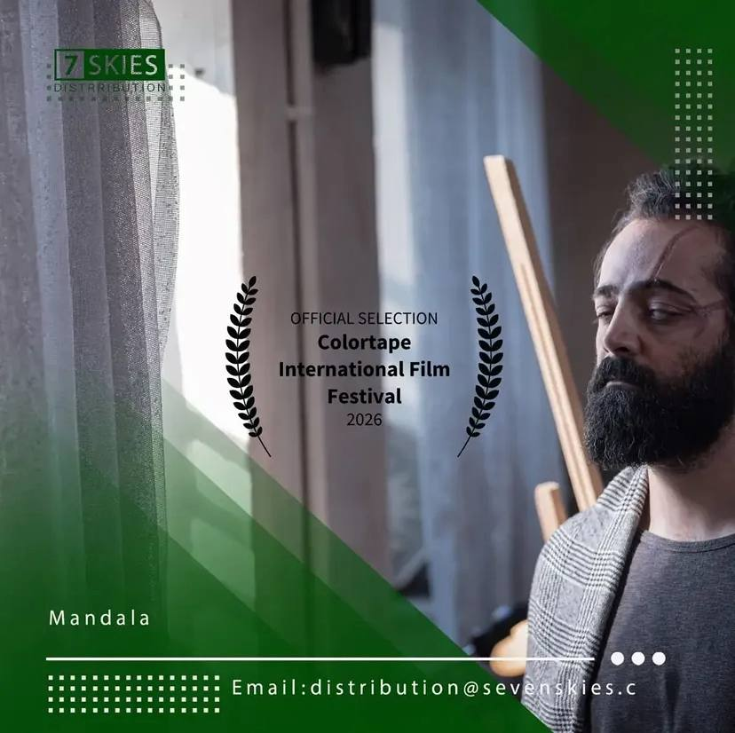

فیلم کوتاه «ماندالا» به کارگردانی بهنام خسروی، در ششمین حضور بینالمللی خود، به نهمین دوره جشنواره بینالمللی فیلم Colortape راه یافت؛ رویدادی که بار دیگر دامنه جغرافیایی استقبال از این فیلم کوتاه ایرانی را گسترش داد و اینبار نام «ماندالا» را در فهرست آثار پذیرفتهشده یکی از جشنوارههای چندفرهنگی استرالیا ثبت کرد.
«ماندالا» در این دوره از جشنواره، در بخش مربوط به آثار کشورهای مسلمان، عربی و ایرانی به رقابت خواهد پرداخت و در کنار مجموعهای از آثار منتخب بینالمللی به نمایش گذاشته میشود. نام این فیلم هماکنون در فهرست آثار جمهوری اسلامی ایران در وبسایت رسمی جشنواره نیز درج شده است؛ نشانهای از رسمیت یافتن حضور «ماندالا» در ساختار داوری این دوره از Colortape.
نهمین دوره Colortape International Film Festival در کشور استرالیا برگزار میشود و رویداد سال ۲۰۲۶ این جشنواره در تاریخ ۷ اکتبر ۲۰۲۶ بهصورت آنلاین برپا خواهد شد. جشنواره Colortape یک رویداد چندفرهنگی است که با تمرکز بر سینمای مستقل و آثار فیلمسازان از فرهنگها و کشورهای مختلف، بستری برای نمایش و رقابت آثار بینالمللی فراهم میکند و بر تنوع فرهنگی، خلاقیت و ارتباط میان فرهنگها تأکید دارد.
پخش بینالمللی «ماندالا» در این مرحله از مسیر جشنوارهای فیلم نیز همچنان بر عهده کمپانی سوناسکایز (Seven Skies) است؛ کمپانیای که پیش از این نیز همکاری نزدیکی با تیم سازنده «ماندالا» داشته است. علاقهمندان و رسانهها برای پیگیری اخبار مربوط به پخش این فیلم میتوانند از طریق نشانی distribution@sevenskies.co با این کمپانی در ارتباط باشند.
راهیابی به Colortape، ششمین ایستگاه بینالمللی «ماندالا» به شمار میرود؛ فیلمی که پیش از این جایزه بهترین فیلم و جایزه بهترین بازیگر نقش اول مرد را از جشنواره Accolade Global Film Competition دریافت کرده، در بخش رقابتی دهمین جشنواره بینالمللی فیلم TINFF کانادا نامزد بهترین کارگردانی شده، به جشنواره بینالمللی فیلم پونه در هندوستان راه یافته، جایزه Golden Standard Award را از چهارمین دوره Stay Gold Film Festival کسب کرده و به چهارمین دوره جشنواره بینالمللی فیلم جنوب شرق آسیا (SEAIFF) در تایلند نیز راه یافته است. حضور پیوسته «ماندالا» در چرخه جشنوارههای بینالمللی طی یک سال گذشته، این بار مسیر خود را به قاره استرالیا نیز گسترش داده است.
بهنام خسروی، نویسنده و کارگردان «ماندالا»، راهیابی به جشنواره Colortape را فرصتی تازه برای معرفی بیشتر سینمای کوتاه مستقل ایران به مخاطبان و فیلمسازان استرالیا و سایر کشورهای شرکتکننده در این جشنواره دانست و از همکاری مستمر کمپانی سوناسکایز در مسیر پخش بینالمللی این فیلم قدردانی کرد. تیم مستر شورتفیلم ادامه مسیر «ماندالا» در جشنوارههای پیشرو، از جمله نمایش آنلاین آن در Colortape، را دنبال و در همین بخش وبلاگ بهروزرسانی خواهد کرد.